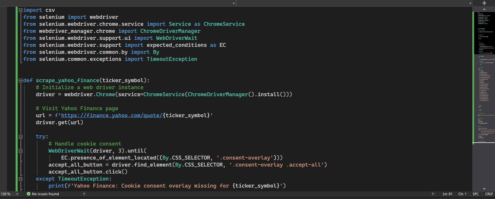
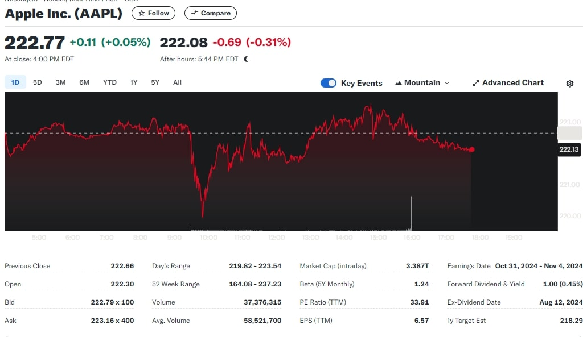
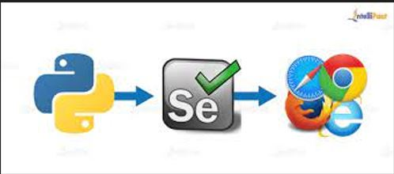

Introduction
I developed a robust web scraper to extract real-time stock data from Yahoo Finance using Python. The goal was to automate the collection of key financial metrics to enable in-depth analysis of various publicly traded companies. By leveraging Python libraries such as Selenium and Pandas, I was able to automate the data extraction process and subsequently clean, organize, and analyze the data.

Objectives
The key objectives of this project were:
- Automate Stock Data Collection: Efficiently gather real-time and historical stock data for multiple companies from Yahoo Finance.
- Extract Key Financial Metrics: Capture crucial financial metrics such as stock prices, price changes, trading volume, market cap, PE ratio, EPS, and other performance indicators.
- Enable Data-Driven Financial Analysis: Provide a clean and structured dataset for further financial modeling and analysis, suitable for automated trading strategies, trend analysis, and risk assessments.

Tools and Technologies
- Python: The core programming language used to build the scraper and handle the data processing.
- Selenium: Automated the interaction with Yahoo Finance’s dynamic content, especially for dealing with JavaScript-rendered elements.
- Pandas: Used for organizing the scraped data, cleaning, and preparing it for analysis.

Key Features and Results
- Real-Time Stock Data Extraction: The scraper dynamically retrieves stock prices, daily highs and lows, 52-week ranges, trading volume, market capitalization, price-to-earnings (PE) ratio, and more.
- Error Handling and Data Validation: Implemented robust error handling to manage potential issues like missing data or dynamic webpage content, ensuring that the data collection process remains uninterrupted and accurate.
- Multi-Stock and Multi-Site Support: The project was designed to scrape data for multiple companies at once and can be easily extended to work with other financial data websites.
Additionally, the implementation includes features such as a continuously spinning fan to enhance realism and dynamic lighting techniques (point, ambient, and directional lights) to create a vibrant atmosphere. The portfolio showcases clickable PNG project images that zoom into detailed views upon interaction, providing an engaging user experience.
Applications and Future Enhancements
This project is highly extensible. Moving forward, I plan to integrate more advanced data analytics techniques such as machine learning models for stock price predictions and use cloud-based services for large-scale data storage and processing. Additionally, I am exploring the use of real-time visualizations and interactive dashboards in Power BI for enhanced insights. This project demonstrates my ability to build scalable and automated solutions for financial data collection and analysis, showcasing my skills in Python, web scraping, and data science.